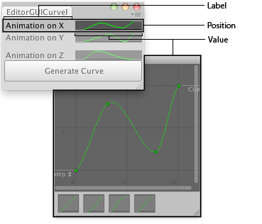

EditorGUI.CurveField
public static AnimationCurve CurveField(Rect position,
AnimationCurve value,
Color color,
Rect ranges);
public static AnimationCurve CurveField(Rect position,
string label,
AnimationCurve value,
Color color,
Rect ranges);
public static AnimationCurve CurveField(Rect position,
GUIContent label,
AnimationCurve value,
Color color,
Rect ranges);
Parameters
| position | Rectangle on the screen to use for the field. | |
| label | Optional label to display in front of the field. | |
| value | The curve to edit. | |
| color | The color to show the curve with. | |
| ranges | Optional rectangle that the curve is restrained within. |
Returns
AnimationCurve The curve edited by the user.
Description 描述
Makes a field for editing an AnimationCurve.

Curve field in an Editor Window.
using System.Collections; using System.Collections.Generic; using UnityEngine; using UnityEditor;
public class EditorGUICurveField : EditorWindow { AnimationCurve curveX = AnimationCurve.Linear(0, 0, 1, 0); AnimationCurve curveY = AnimationCurve.Linear(0, 0, 1, 1); AnimationCurve curveZ = AnimationCurve.Linear(0, 0, 1, 0);
[MenuItem("Examples/Curve Field demo")] static void Init() { EditorWindow window = GetWindow(typeof(EditorGUICurveField)); window.position = new Rect(0, 0, 400, 199); window.Show(); }
void OnGUI() { curveX = EditorGUI.CurveField( new Rect(3, 3, position.width - 6, 50), "Animation on X", curveX); curveY = EditorGUI.CurveField( new Rect(3, 56, position.width - 6, 50), "Animation on Y", curveY); curveZ = EditorGUI.CurveField( new Rect(3, 109, position.width - 6, 50), "Animation on Z", curveZ);
if (GUI.Button(new Rect(3, 163, position.width - 6, 30), "Generate Curve")) AddCurveToSelectedGameObject(); }
// A GameObject with the FollowAnimationCurve script must be selected void AddCurveToSelectedGameObject() { if (Selection.activeGameObject) { FollowAnimationCurve comp = Selection.activeGameObject.GetComponent<FollowAnimationCurve>(); comp.SetCurves(curveX, curveY, curveZ); } else { Debug.LogError("No Game Object selected for adding an animation curve"); } } }
This is the run-time script which animates the attached GameObject:
// Note that this must be FollowAnimationCurve.cs
using UnityEngine; using System.Collections;
public class FollowAnimationCurve : MonoBehaviour { public AnimationCurve curveX; public AnimationCurve curveY; public AnimationCurve curveZ;
public void SetCurves(AnimationCurve xC, AnimationCurve yC, AnimationCurve zC) { curveX = xC; curveY = yC; curveZ = zC; }
void Update() { transform.position = new Vector3( curveX.Evaluate(Time.time), curveY.Evaluate(Time.time), curveZ.Evaluate(Time.time)); } }
public static void CurveField(Rect position,
SerializedProperty property,
Color color,
Rect ranges);
public static void CurveField(Rect position,
SerializedProperty property,
Color color,
Rect ranges,
GUIContent label);
Parameters
| position | Rectangle on the screen to use for the field. | |
| property | The curve to edit. | |
| color | The color to show the curve with. | |
| ranges | Optional rectangle that the curve is restrained within. | |
| label | Optional label to display in front of the field. Pass [[GUIContent.none] to hide the label. |
Description 描述
Makes a field for editing an AnimationCurve.